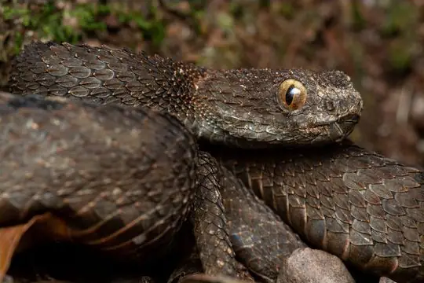
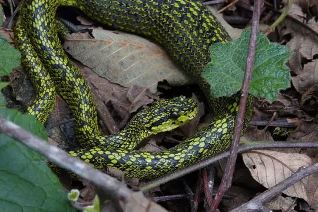
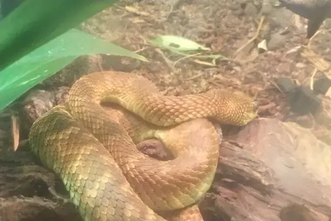

Viperidae
The family Viperidae (vipers and pit vipers) has 398 living species in SnakeList (all venomous), in 39 genera, plus 13 fossil species listed separately.
- 398living species
- 398venomous
- 39genera
- 13fossil
About the family
All vipers are venomous. Their long, hollow fangs sit on hinges at the front of the mouth and fold back against the roof of the mouth when not in use. Most are stout snakes with a broad head.[1,2]
Pit vipers (subfamily Crotalinae) - rattlesnakes, lanceheads, copperheads and their relatives - have a heat-sensing pit between the eye and the nostril on each side of the head, which lets them sense warm-blooded prey. The true vipers (Viperinae) of Africa, Europe and Asia have no pits.[3,4]
Vipers live almost everywhere except Antarctica, Australia, New Zealand, Madagascar, the far north and remote islands such as Hawaii. Most give birth to live young, but a few species lay eggs.[4]
Sources for this introduction
- Vipers and Pitvipers (Viperidae). Grzimek's Animal Life Encyclopedia, via Encyclopedia.com.
- Facts about vipers. Live Science.
- Crotalinae. New World Encyclopedia.
- Viperidae. New World Encyclopedia.
Information last reviewed 9 November 2026.
Species
Showing 398 species
- No photo yetAcuminate Bush ViperAtheris acuminata
 AdderVipera nikolskii
AdderVipera nikolskii African Bush ViperAtheris squamigera
African Bush ViperAtheris squamigera African Hairy Bush ViperAtheris hispida
African Hairy Bush ViperAtheris hispida African Saw-scaled ViperEchis ocellatus
African Saw-scaled ViperEchis ocellatus Alai Pit ViperGloydius rickmersi
Alai Pit ViperGloydius rickmersi Alashan PitviperGloydius cognatus
Alashan PitviperGloydius cognatus Albany AdderBitis albanica
Albany AdderBitis albanica Alburzi ViperVipera eriwanensis
Alburzi ViperVipera eriwanensis Alcatrazes LanceheadBothrops alcatraz
Alcatrazes LanceheadBothrops alcatraz Altai ViperVipera altaica
Altai ViperVipera altaica Anamala Pit ViperCraspedocephalus anamallensis
Anamala Pit ViperCraspedocephalus anamallensis Anatolian Meadow ViperVipera anatolica
Anatolian Meadow ViperVipera anatolica Andaman PitviperTrimeresurus andersonii
Andaman PitviperTrimeresurus andersonii Andean Forest-pitviperBothrops pulcher
Andean Forest-pitviperBothrops pulcher Andean LanceheadBothrocophias andianus
Andean LanceheadBothrocophias andianus- No photo yetAngolan AdderBitis heraldica
 Arabian Sand ViperCerastes gasperettii
Arabian Sand ViperCerastes gasperettii Arizona Black RattlesnakeCrotalus cerberus
Arizona Black RattlesnakeCrotalus cerberus Armenian ViperMontivipera raddei
Armenian ViperMontivipera raddei Aruba Island RattlesnakeCrotalus unicolor
Aruba Island RattlesnakeCrotalus unicolor Arunachal PitviperTrimeresurus arunachalensis
Arunachal PitviperTrimeresurus arunachalensis Ashe's Bush ViperAtheris desaixi
Ashe's Bush ViperAtheris desaixi Ashy Pit-viperCraspedocephalus puniceus
Ashy Pit-viperCraspedocephalus puniceus Asian Sand ViperEristicophis macmahoni
Asian Sand ViperEristicophis macmahoni Asp ViperVipera aspis
Asp ViperVipera aspis Autlán Long-tailed RattlesnakeCrotalus lannomi
Autlán Long-tailed RattlesnakeCrotalus lannomi- No photo yetBale Mountains AdderBitis harenna
 Bamboo PitviperTrimeresurus erythrurus
Bamboo PitviperTrimeresurus erythrurus- No photo yetBanded Pit ViperTrimeresurus fasciatus
- No photo yetBarat Bamboo PitviperTrimeresurus barati
 Barbour's Montane Pit ViperMixcoatlus barbouri
Barbour's Montane Pit ViperMixcoatlus barbouri Barnett's LanceheadBothrops barnetti
Barnett's LanceheadBothrops barnetti Basilisk RattlesnakeCrotalus basiliscus
Basilisk RattlesnakeCrotalus basiliscus Black-headed BushmasterLachesis melanocephala
Black-headed BushmasterLachesis melanocephala Black-speckled Palm Pit ViperBothriechis nigroviridis
Black-speckled Palm Pit ViperBothriechis nigroviridis Black-tailed Horned PitviperMixcoatlus melanurus
Black-tailed Horned PitviperMixcoatlus melanurus Black-tailed RattlesnakeCrotalus molossus
Black-tailed RattlesnakeCrotalus molossus Blotched Palm-PitviperBothriechis supraciliaris
Blotched Palm-PitviperBothriechis supraciliaris Bolivian LanceheadBothrops sanctaecrucis
Bolivian LanceheadBothrops sanctaecrucis Borkin's ViperEchis borkini
Borkin's ViperEchis borkini Borneo Pit ViperCraspedocephalus borneensis
Borneo Pit ViperCraspedocephalus borneensis Brazil's LanceheadBothrops brazili
Brazil's LanceheadBothrops brazili Brazil's Lancehead (oligobalius)Bothrops oligobalius
Brazil's Lancehead (oligobalius)Bothrops oligobalius Brazilian LanceheadBothrops moojeni
Brazilian LanceheadBothrops moojeni Broad-banded CopperheadAgkistrodon laticinctus
Broad-banded CopperheadAgkistrodon laticinctus Broad-banded Temple PitviperTropidolaemus laticinctus
Broad-banded Temple PitviperTropidolaemus laticinctus Broad-horned PitviperOphryacus sphenophrys
Broad-horned PitviperOphryacus sphenophrys Broadley's Bush ViperAtheris broadleyi
Broadley's Bush ViperAtheris broadleyi Brongersma's Pit ViperCraspedocephalus brongersmai
Brongersma's Pit ViperCraspedocephalus brongersmai Brown Spotted PitviperProtobothrops mucrosquamatus
Brown Spotted PitviperProtobothrops mucrosquamatus Brown's Montane PitviperMixcoatlus browni
Brown's Montane PitviperMixcoatlus browni Brown-spotted Pit ViperTrimeresurus venustus
Brown-spotted Pit ViperTrimeresurus venustus BushmasterLachesis muta
BushmasterLachesis muta Caatinga LanceheadBothrops erythromelas
Caatinga LanceheadBothrops erythromelas- No photo yetCacicaBothrops ayerbei
 Campbell's RattlesnakeCrotalus campbelli
Campbell's RattlesnakeCrotalus campbelli CantilAgkistrodon russeolus
CantilAgkistrodon russeolus Cantor's Pit ViperTrimeresurus cantori
Cantor's Pit ViperTrimeresurus cantori Cardamom Mountains Green PitviperTrimeresurus cardamomensis
Cardamom Mountains Green PitviperTrimeresurus cardamomensis Cascabel RattlesnakeCrotalus durissus
Cascabel RattlesnakeCrotalus durissus- No photo yetCat LanceheadBothrops rhombeatus
 Catalina Island RattlesnakeCrotalus catalinensis
Catalina Island RattlesnakeCrotalus catalinensis Caucasian PitviperGloydius caucasicus
Caucasian PitviperGloydius caucasicus Caucasus ViperVipera kaznakovi
Caucasus ViperVipera kaznakovi Central American BushmasterLachesis stenophrys
Central American BushmasterLachesis stenophrys Central American Jumping Pit ViperMetlapilcoatlus mexicanus
Central American Jumping Pit ViperMetlapilcoatlus mexicanus Central Asian PitviperGloydius intermedius
Central Asian PitviperGloydius intermedius- No photo yetCentral Nicobar Pit ViperTrimeresurus mutabilis
 Cerrado Lancehead (pauloensis)Bothrops pauloensis
Cerrado Lancehead (pauloensis)Bothrops pauloensis Cerro Petlalcala Montane PitviperCerrophidion petlalcalensis
Cerro Petlalcala Montane PitviperCerrophidion petlalcalensis Ceylon Pit ViperCraspedocephalus trigonocephalus
Ceylon Pit ViperCraspedocephalus trigonocephalus Chamba PitviperGloydius chambensis
Chamba PitviperGloydius chambensis Chinese Green Tree ViperTrimeresurus stejnegeri
Chinese Green Tree ViperTrimeresurus stejnegeri Chinese MoccasinDeinagkistrodon acutus
Chinese MoccasinDeinagkistrodon acutus Chinese Mountain Pit ViperOvophis monticola
Chinese Mountain Pit ViperOvophis monticola Chocoan BushmasterLachesis acrochorda
Chocoan BushmasterLachesis acrochorda Chocoan Forest Pit ViperBothrops punctatus
Chocoan Forest Pit ViperBothrops punctatus Chocoan Toadheaded PitviperBothrocophias myersi
Chocoan Toadheaded PitviperBothrocophias myersi Clouded Pit ViperTrimeresurus nebularis
Clouded Pit ViperTrimeresurus nebularis Coffee Palm ViperBothriechis lateralis
Coffee Palm ViperBothriechis lateralis Colombian LanceheadBothrocophias colombianus
Colombian LanceheadBothrocophias colombianus Common Bamboo ViperCraspedocephalus gramineus
Common Bamboo ViperCraspedocephalus gramineus Common Night AdderCausus rhombeatus
Common Night AdderCausus rhombeatus CopperheadAgkistrodon contortrix
CopperheadAgkistrodon contortrix Costa Rica Montane PitviperCerrophidion sasai
Costa Rica Montane PitviperCerrophidion sasai CotiaraBothrops cotiara
CotiaraBothrops cotiara CottonmouthAgkistrodon piscivorus
CottonmouthAgkistrodon piscivorus Cross-banded Mountain RattlesnakeCrotalus transversus
Cross-banded Mountain RattlesnakeCrotalus transversus- No photo yetCyclades Blunt-nosed ViperMacrovipera schweizeri
 Dabie Mountains Pit ViperProtobothrops dabieshanensis
Dabie Mountains Pit ViperProtobothrops dabieshanensis Darevsky's ViperVipera darevskii
Darevsky's ViperVipera darevskii David's PitviperTrimeresurus davidi
David's PitviperTrimeresurus davidi Desert Horned ViperCerastes cerastes
Desert Horned ViperCerastes cerastes Desert LanceheadBothrops pictus
Desert LanceheadBothrops pictus Desert Mountain AdderBitis xeropaga
Desert Mountain AdderBitis xeropaga- No photo yetDesert ViperDaboia deserti
 Dinnik's ViperVipera dinniki
Dinnik's ViperVipera dinniki Dunn's Hognose ViperPorthidium dunni
Dunn's Hognose ViperPorthidium dunni Dwarf Puff AdderBitis peringueyi
Dwarf Puff AdderBitis peringueyi Eastern Black-tailed RattlesnakeCrotalus ornatus
Eastern Black-tailed RattlesnakeCrotalus ornatus Eastern Diamondback RattlesnakeCrotalus adamanteus
Eastern Diamondback RattlesnakeCrotalus adamanteus Eastern Russel's ViperDaboia siamensis
Eastern Russel's ViperDaboia siamensis Ecuadorian ToadheadBothrocophias campbelli
Ecuadorian ToadheadBothrocophias campbelli Egyptian Saw-scaled ViperEchis pyramidum
Egyptian Saw-scaled ViperEchis pyramidum Elegant PitviperProtobothrops elegans
Elegant PitviperProtobothrops elegans Emerald Horned PitviperOphryacus smaragdinus
Emerald Horned PitviperOphryacus smaragdinus Ethiopia ViperBitis parviocula
Ethiopia ViperBitis parviocula European AdderVipera berus
European AdderVipera berus Eyelash ViperBothriechis schlegelii
Eyelash ViperBothriechis schlegelii- No photo yetFairy PitviperTrimeresurus buniana
 Fea ViperAzemiops feae
Fea ViperAzemiops feae Fer-de-lanceBothrops asper
Fer-de-lanceBothrops asper Fer-de-LanceBothrops atrox
Fer-de-LanceBothrops atrox Field's Horned ViperPseudocerastes fieldi
Field's Horned ViperPseudocerastes fieldi Florida CottonmouthAgkistrodon conanti
Florida CottonmouthAgkistrodon conanti Fonseca's LanceheadBothrops fonsecai
Fonseca's LanceheadBothrops fonsecai Forest Night AdderCausus lichtensteinii
Forest Night AdderCausus lichtensteinii- No photo yetFranceses Island-LanceheadBothrops sazimai
 Gaboon ViperBitis gabonica
Gaboon ViperBitis gabonica Glacier Pit ViperGloydius swild
Glacier Pit ViperGloydius swild Gloyd's MoccasinAgkistrodon howardgloydi
Gloyd's MoccasinAgkistrodon howardgloydi Gobi PitviperGloydius stejnegeri
Gobi PitviperGloydius stejnegeri Godman's Montane Pit ViperCerrophidion godmani
Godman's Montane Pit ViperCerrophidion godmani Golden LanceheadBothrops insularis
Golden LanceheadBothrops insularis Great Basin RattlesnakeCrotalus lutosus
Great Basin RattlesnakeCrotalus lutosus Great Lakes Bush ViperAtheris nitschei
Great Lakes Bush ViperAtheris nitschei Greek Meadow ViperVipera graeca
Greek Meadow ViperVipera graeca Green Bamboo Leaf Pit ViperTrimeresurus medoensis
Green Bamboo Leaf Pit ViperTrimeresurus medoensis Green Bush ViperAtheris chlorechis
Green Bush ViperAtheris chlorechis Green JararacaBothrops bilineatus
Green JararacaBothrops bilineatus Green Night AdderCausus resimus
Green Night AdderCausus resimus Guatemala Palm Pit ViperBothriechis bicolor
Guatemala Palm Pit ViperBothriechis bicolor Guerreran Long-tailed RattlesnakeCrotalus ericsmithi
Guerreran Long-tailed RattlesnakeCrotalus ericsmithi Guifarro's Palm PitviperBothriechis guifarroi
Guifarro's Palm PitviperBothriechis guifarroi Gumprecht's Pit ViperTrimeresurus gumprechti
Gumprecht's Pit ViperTrimeresurus gumprechti Gunalen's PitviperTrimeresurus gunaleni
Gunalen's PitviperTrimeresurus gunaleni Guo's Green Pit ViperTrimeresurus guoi
Guo's Green Pit ViperTrimeresurus guoi HabuProtobothrops flavoviridis
HabuProtobothrops flavoviridis Habu Pit ViperProtobothrops himalayanus
Habu Pit ViperProtobothrops himalayanus Halys Pit ViperGloydius halys
Halys Pit ViperGloydius halys Hetfield's Bush ViperAtheris hetfieldi
Hetfield's Bush ViperAtheris hetfieldi Himalayan PitviperGloydius himalayanus
Himalayan PitviperGloydius himalayanus Hognose LanceheadBothrocophias hyoprora
Hognose LanceheadBothrocophias hyoprora Hognosed Pit ViperPorthidium nasutum
Hognosed Pit ViperPorthidium nasutum Hon Son Pit ViperTrimeresurus honsonensis
Hon Son Pit ViperTrimeresurus honsonensis Honduras Jumping Pit ViperMetlapilcoatlus indomitus
Honduras Jumping Pit ViperMetlapilcoatlus indomitus Honduras Montane PitviperCerrophidion wilsoni
Honduras Montane PitviperCerrophidion wilsoni Horned AdderBitis caudalis
Horned AdderBitis caudalis Horned Pit ViperProtobothrops cornutus
Horned Pit ViperProtobothrops cornutus Horsehead Island Speckled RattlesnakeCrotalus polisi
Horsehead Island Speckled RattlesnakeCrotalus polisi Horseshoe Pit-viperCraspedocephalus strigatus
Horseshoe Pit-viperCraspedocephalus strigatus- No photo yetHorseshoe PitviperTrimeresurus strigatus
- No photo yetHughes' Saw-scaled ViperEchis hughesi
 Hump-nosed MoccasinHypnale hypnale
Hump-nosed MoccasinHypnale hypnale- No photo yetHutton's PitviperTropidolaemus huttoni
 Inca Forest Pit Viper (chloromelas)Bothrops chloromelas
Inca Forest Pit Viper (chloromelas)Bothrops chloromelas Inca Forest Pit Viper (oligolepis)Bothrops oligolepis
Inca Forest Pit Viper (oligolepis)Bothrops oligolepis Indonesian Pit ViperTrimeresurus hageni
Indonesian Pit ViperTrimeresurus hageni- No photo yetIranian Mountain Steppe ViperVipera ebneri
 Isla Angel RattlesnakeCrotalus angelensis
Isla Angel RattlesnakeCrotalus angelensis Isla Piojo Speckled RattlesnakeCrotalus thalassoporus
Isla Piojo Speckled RattlesnakeCrotalus thalassoporus Island Pit ViperTrimeresurus labialis
Island Pit ViperTrimeresurus labialis Jabre’s LanceheadBothrops jabrensis
Jabre’s LanceheadBothrops jabrensis JararacaBothrops jararaca
JararacaBothrops jararaca Jararaca PintadaBothrops neuwiedi
Jararaca PintadaBothrops neuwiedi JararacussuBothrops jararacussu
JararacussuBothrops jararacussu Jerdon's PitviperProtobothrops jerdonii
Jerdon's PitviperProtobothrops jerdonii Jiuzhai PitviperGloydius lateralis
Jiuzhai PitviperGloydius lateralis Joger's Saw-scaled ViperEchis jogeri
Joger's Saw-scaled ViperEchis jogeri Jonathan's LanceheadBothrops jonathani
Jonathan's LanceheadBothrops jonathani Kanburi Pit ViperTrimeresurus kanburiensis
Kanburi Pit ViperTrimeresurus kanburiensis Karaganda PitviperGloydius caraganus
Karaganda PitviperGloydius caraganus- No photo yetKatanga Mountain Bush ViperAtheris katangensis
 Kaulback's Lance-headed PitviperProtobothrops kaulbacki
Kaulback's Lance-headed PitviperProtobothrops kaulbacki Kenya Horned ViperBitis worthingtoni
Kenya Horned ViperBitis worthingtoni Kenya Montane ViperMontatheris hindii
Kenya Montane ViperMontatheris hindii Khosatzki’s Saw-scaled ViperEchis khosatzkii
Khosatzki’s Saw-scaled ViperEchis khosatzkii Kikuchi HabuTrimeresurus gracilis
Kikuchi HabuTrimeresurus gracilis Kramer's Pit ViperTrimeresurus macrops
Kramer's Pit ViperTrimeresurus macrops Kuhrang Mountain ViperMontivipera kuhrangica
Kuhrang Mountain ViperMontivipera kuhrangica Kui Buri PitviperTrimeresurus kuiburi
Kui Buri PitviperTrimeresurus kuiburi Lancang Plateau ViperGloydius huangi
Lancang Plateau ViperGloydius huangi Lansberg's Hognosed Pit ViperPorthidium lansbergii
Lansberg's Hognosed Pit ViperPorthidium lansbergii- No photo yetLarge-headed Carpet ViperEchis megalocephalus
 Large-scaled Pit ViperCraspedocephalus macrolepis
Large-scaled Pit ViperCraspedocephalus macrolepis Lataste's ViperVipera latastei
Lataste's ViperVipera latastei Latifi's ViperMontivipera latifii
Latifi's ViperMontivipera latifii Lebanon ViperMontivipera bornmuelleri
Lebanon ViperMontivipera bornmuelleri Levantine ViperMacrovipera lebetinus
Levantine ViperMacrovipera lebetinus Likiang PitviperGloydius monticola
Likiang PitviperGloydius monticola Lojan LanceheadBothrocophias lojanus
Lojan LanceheadBothrocophias lojanus Lotiev's ViperVipera lotievi
Lotiev's ViperVipera lotievi Lower California RattlesnakeCrotalus enyo
Lower California RattlesnakeCrotalus enyo Lowland Swamp ViperProatheris superciliaris
Lowland Swamp ViperProatheris superciliaris Lutz's Cerrado LanceheadBothrops lutzi
Lutz's Cerrado LanceheadBothrops lutzi Malabar Pit ViperCraspedocephalus malabaricus
Malabar Pit ViperCraspedocephalus malabaricus Malayan Brown Pit ViperOvophis convictus
Malayan Brown Pit ViperOvophis convictus Malayan Pit ViperCalloselasma rhodostoma
Malayan Pit ViperCalloselasma rhodostoma Malcolm's PitviperTrimeresurus malcolmi
Malcolm's PitviperTrimeresurus malcolmi MamushiGloydius blomhoffii
MamushiGloydius blomhoffii Manabi Hognose PitviperPorthidium arcosae
Manabi Hognose PitviperPorthidium arcosae Many-horned AdderBitis cornuta
Many-horned AdderBitis cornuta Mao-lan PitviperProtobothrops maolanensis
Mao-lan PitviperProtobothrops maolanensis Marajó LanceheadBothrops marajoensis
Marajó LanceheadBothrops marajoensis Marbled LanceheadBothrops marmoratus
Marbled LanceheadBothrops marmoratus March's Palm Pit ViperBothriechis marchi
March's Palm Pit ViperBothriechis marchi Martinique LanceheadBothrops lanceolatus
Martinique LanceheadBothrops lanceolatus MassasaugaSistrurus catenatus
MassasaugaSistrurus catenatus Matilda's Horned ViperAtheris matildae
Matilda's Horned ViperAtheris matildae Mato Grosso LanceheadBothrops mattogrossensis
Mato Grosso LanceheadBothrops mattogrossensis Maya's Pit ViperTrimeresurus mayaae
Maya's Pit ViperTrimeresurus mayaae- No photo yetMayombe Bush-ViperAtheris anisolepis
 McGregor's PitviperTrimeresurus mcgregori
McGregor's PitviperTrimeresurus mcgregori Meadow ViperVipera ursinii
Meadow ViperVipera ursinii Merendon Palm Pit ViperBothriechis thalassinus
Merendon Palm Pit ViperBothriechis thalassinus Mexican Dusky RattlesnakeCrotalus armstrongi
Mexican Dusky RattlesnakeCrotalus armstrongi Mexican Lancehead RattlesnakeCrotalus polystictus
Mexican Lancehead RattlesnakeCrotalus polystictus Mexican MoccasinAgkistrodon bilineatus
Mexican MoccasinAgkistrodon bilineatus Mexican Pygmy RattlesnakeCrotalus ravus
Mexican Pygmy RattlesnakeCrotalus ravus Mexican Smallhead RattlesnakeCrotalus intermedius
Mexican Smallhead RattlesnakeCrotalus intermedius Middle American RattlesnakeCrotalus simus
Middle American RattlesnakeCrotalus simus Midget Faded RattlesnakeCrotalus concolor
Midget Faded RattlesnakeCrotalus concolor- No photo yetMoela’s LanceheadBothrops germanoi
 Mojave RattlesnakeCrotalus scutulatus
Mojave RattlesnakeCrotalus scutulatus- No photo yetMongo Hairy Bush ViperAtheris mongoensis
 Moorish ViperDaboia mauritanica
Moorish ViperDaboia mauritanica Mount Bulgar ViperMontivipera bulgardaghica
Mount Bulgar ViperMontivipera bulgardaghica Mount Kinabalu Pit ViperGarthius chaseni
Mount Kinabalu Pit ViperGarthius chaseni Mount Liupan PitviperGloydius liupanensis
Mount Liupan PitviperGloydius liupanensis
Mount Mabu Bush ViperAtheris mabuensis Mountain AdderBitis atropos
Mountain AdderBitis atropos Mountain Viper (albizona)Montivipera albizona
Mountain Viper (albizona)Montivipera albizona Mountain Viper (monticola)Vipera monticola
Mountain Viper (monticola)Vipera monticola Mt Rungwe Bush ViperAtheris rungweensis
Mt Rungwe Bush ViperAtheris rungweensis Mt. Mang PitviperProtobothrops mangshanensis
Mt. Mang PitviperProtobothrops mangshanensis Murici LanceheadBothrops muriciensis
Murici LanceheadBothrops muriciensis Nabang PitviperTrimeresurus caudornatus
Nabang PitviperTrimeresurus caudornatus Namaqua Dwarf AdderBitis schneideri
Namaqua Dwarf AdderBitis schneideri Nepal PitviperTrimeresurus septentrionalis
Nepal PitviperTrimeresurus septentrionalis North Philippine Temple PitviperTropidolaemus subannulatus
North Philippine Temple PitviperTropidolaemus subannulatus Northwestern Neotropical RattlesnakeCrotalus culminatus
Northwestern Neotropical RattlesnakeCrotalus culminatus Nose-horned ViperVipera ammodytes
Nose-horned ViperVipera ammodytes- No photo yetNujiang Pit ViperGloydius lipipengi
 Okinawa PitviperOvophis okinavensis
Okinawa PitviperOvophis okinavensis Olmecan Pit ViperMetlapilcoatlus olmec
Olmecan Pit ViperMetlapilcoatlus olmec Oman Saw-scaled ViperEchis omanensis
Oman Saw-scaled ViperEchis omanensis Omkoi Lance-headed Pit ViperProtobothrops kelomohy
Omkoi Lance-headed Pit ViperProtobothrops kelomohy Orlov's ViperVipera orlovi
Orlov's ViperVipera orlovi Osborne's LanceheadBothrops osbornei
Osborne's LanceheadBothrops osbornei Ottoman ViperMontivipera xanthina
Ottoman ViperMontivipera xanthina Painted LanceheadBothrops diporus
Painted LanceheadBothrops diporus Palestine Saw-scaled ViperEchis coloratus
Palestine Saw-scaled ViperEchis coloratus Palestine ViperDaboia palaestinae
Palestine ViperDaboia palaestinae Palm Vit ViperCraspedocephalus wiroti
Palm Vit ViperCraspedocephalus wiroti Pampas LanceheadBothrops pubescens
Pampas LanceheadBothrops pubescens Panamint RattlesnakeCrotalus stephensi
Panamint RattlesnakeCrotalus stephensi Persian Horned ViperPseudocerastes persicus
Persian Horned ViperPseudocerastes persicus Philippine PitviperTrimeresurus flavomaculatus
Philippine PitviperTrimeresurus flavomaculatus Phuket PitviperTrimeresurus phuketensis
Phuket PitviperTrimeresurus phuketensis Picado's Pit ViperAtropoides picadoi
Picado's Pit ViperAtropoides picadoi Piraja's LanceheadBothrops pirajai
Piraja's LanceheadBothrops pirajai Plain Mountain AdderBitis inornata
Plain Mountain AdderBitis inornata Pope's Bamboo Pit ViperTrimeresurus popeiorum
Pope's Bamboo Pit ViperTrimeresurus popeiorum Prairie RattlesnakeCrotalus viridis
Prairie RattlesnakeCrotalus viridis Puff AdderBitis arietans
Puff AdderBitis arietans Pygmy RattlesnakeSistrurus miliarius
Pygmy RattlesnakeSistrurus miliarius Quang Binh PitviperTrimeresurus truongsonensis
Quang Binh PitviperTrimeresurus truongsonensis Queretaran Dusky RattlesnakeCrotalus aquilus
Queretaran Dusky RattlesnakeCrotalus aquilus- No photo yetRasmussen’s Night AdderCausus rasmusseni
 Razi's ViperMacrovipera razii
Razi's ViperMacrovipera razii Red AdderBitis rubida
Red AdderBitis rubida Red Diamond RattlesnakeCrotalus ruber
Red Diamond RattlesnakeCrotalus ruber Rhinoceros ViperBitis rhinoceros
Rhinoceros ViperBitis rhinoceros Rhinoceros Viper (nasicornis)Bitis nasicornis
Rhinoceros Viper (nasicornis)Bitis nasicornis Ridge-nosed RattlesnakeCrotalus willardi
Ridge-nosed RattlesnakeCrotalus willardi Rock RattlesnakeCrotalus lepidus
Rock RattlesnakeCrotalus lepidus Roman's Carpet ViperEchis romani
Roman's Carpet ViperEchis romani Roman's Saw-scaled ViperEchis leucogaster
Roman's Saw-scaled ViperEchis leucogaster Rowley's Palm Pit ViperBothriechis rowleyi
Rowley's Palm Pit ViperBothriechis rowleyi Russell's ViperDaboia russelii
Russell's ViperDaboia russelii Sabah Pit ViperTrimeresurus sabahi
Sabah Pit ViperTrimeresurus sabahi Sahara Sand ViperCerastes vipera
Sahara Sand ViperCerastes vipera Saint Lucia ViperBothrops caribbaeus
Saint Lucia ViperBothrops caribbaeus Sako's ViperVipera sakoi
Sako's ViperVipera sakoi Salazar's Pit ViperTrimeresurus salazar
Salazar's Pit ViperTrimeresurus salazar San Esteban Island RattlesnakeCrotalus estebanensis
San Esteban Island RattlesnakeCrotalus estebanensis San Lorenzo Island RattlesnakeCrotalus lorenzoensis
San Lorenzo Island RattlesnakeCrotalus lorenzoensis Sao Paulo LanceheadBothrops itapetiningae
Sao Paulo LanceheadBothrops itapetiningae Saw-scaled ViperEchis carinatus
Saw-scaled ViperEchis carinatus Schultze's Pit ViperTrimeresurus schultzei
Schultze's Pit ViperTrimeresurus schultzei Seoane's ViperVipera seoanei
Seoane's ViperVipera seoanei Shedao Island PitviperGloydius shedaoensis
Shedao Island PitviperGloydius shedaoensis Shore Pit ViperTrimeresurus purpureomaculatus
Shore Pit ViperTrimeresurus purpureomaculatus Short-tailed Pit ViperGloydius brevicauda
Short-tailed Pit ViperGloydius brevicauda Sichuan PitviperTrimeresurus sichuanensis
Sichuan PitviperTrimeresurus sichuanensis SidewinderCrotalus cerastes
SidewinderCrotalus cerastes Sinaloan Long-tailed RattlesnakeCrotalus stejnegeri
Sinaloan Long-tailed RattlesnakeCrotalus stejnegeri Slender Hognose ViperPorthidium ophryomegas
Slender Hognose ViperPorthidium ophryomegas Slender-horned PitviperOphryacus undulatus
Slender-horned PitviperOphryacus undulatus Small-eyed ToadheadBothrocophias microphthalmus
Small-eyed ToadheadBothrocophias microphthalmus Snouted Night AdderCausus defilippii
Snouted Night AdderCausus defilippii South Philippine Temple PitviperTropidolaemus philippensis
South Philippine Temple PitviperTropidolaemus philippensis Southern AdderBitis armata
Southern AdderBitis armata Southern Large-scaled Pit ViperCraspedocephalus peltopelor
Southern Large-scaled Pit ViperCraspedocephalus peltopelor Southern Pacific RattlesnakeCrotalus helleri
Southern Pacific RattlesnakeCrotalus helleri Southwestern Speckled RattlesnakeCrotalus pyrrhus
Southwestern Speckled RattlesnakeCrotalus pyrrhus Speckled Forest Pit ViperBothrops taeniatus
Speckled Forest Pit ViperBothrops taeniatus Speckled RattlesnakeCrotalus mitchellii
Speckled RattlesnakeCrotalus mitchellii Spider-tailed ViperPseudocerastes urarachnoides
Spider-tailed ViperPseudocerastes urarachnoides Spotted Night AdderCausus maculatus
Spotted Night AdderCausus maculatus Sri Lanka Humpnose ViperHypnale nepa
Sri Lanka Humpnose ViperHypnale nepa Steppe ViperVipera renardi
Steppe ViperVipera renardi Strauch's PitviperGloydius strauchi
Strauch's PitviperGloydius strauchi Sumatra Pit ViperTrimeresurus sumatranus
Sumatra Pit ViperTrimeresurus sumatranus Sumatran Palm Pit ViperCraspedocephalus andalasensis
Sumatran Palm Pit ViperCraspedocephalus andalasensis Szechwan Pit ViperProtobothrops xiangchengensis
Szechwan Pit ViperProtobothrops xiangchengensis- No photo yetTai Hairy Bush ViperAtheris hirsuta
 Taiwan Mountain PitviperOvophis makazayazaya
Taiwan Mountain PitviperOvophis makazayazaya
Talamancan Palm-PitviperBothriechis nubestris Tamaulipan Rock RattlesnakeCrotalus morulus
Tamaulipan Rock RattlesnakeCrotalus morulus Tancitaran Dusky RattlesnakeCrotalus pusillus
Tancitaran Dusky RattlesnakeCrotalus pusillus- No photo yetTancitaro RattlesnakeCrotalus tancitarensis
 Taylor's CantilAgkistrodon taylori
Taylor's CantilAgkistrodon taylori Tehuantepec Isthmus Neotropical RattlesnakeCrotalus ehecatl
Tehuantepec Isthmus Neotropical RattlesnakeCrotalus ehecatl Three Horned-scaled PitviperProtobothrops sieversorum
Three Horned-scaled PitviperProtobothrops sieversorum Tibetan Pit ViperTrimeresurus tibetanus
Tibetan Pit ViperTrimeresurus tibetanus Tiger RattlesnakeCrotalus tigris
Tiger RattlesnakeCrotalus tigris Timber RattlesnakeCrotalus horridus
Timber RattlesnakeCrotalus horridus Tlaloc's RattlesnakeCrotalus tlaloci
Tlaloc's RattlesnakeCrotalus tlaloci- No photo yetToba PitviperTrimeresurus toba
 Tokara HabuProtobothrops tokarensis
Tokara HabuProtobothrops tokarensis Tongtianhe Pit ViperGloydius rubromaculatus
Tongtianhe Pit ViperGloydius rubromaculatus Tonkin PitviperOvophis tonkinensis
Tonkin PitviperOvophis tonkinensis- No photo yetTortuga Island RattlesnakeCrotalus tortugensis
 Totonacan RattlesnakeCrotalus totonacus
Totonacan RattlesnakeCrotalus totonacus Transcaucasian Long-nosed ViperVipera transcaucasiana
Transcaucasian Long-nosed ViperVipera transcaucasiana Travancore Pit ViperCraspedocephalus travancoricus
Travancore Pit ViperCraspedocephalus travancoricus Trungkhanh PitviperProtobothrops trungkhanhensis
Trungkhanh PitviperProtobothrops trungkhanhensis Tsushima Island PitviperGloydius tsushimaensis
Tsushima Island PitviperGloydius tsushimaensis- No photo yetTurkish ViperVipera barani
 Twin-spotted RattlesnakeCrotalus pricei
Twin-spotted RattlesnakeCrotalus pricei Two-lined Night AdderCausus bilineatus
Two-lined Night AdderCausus bilineatus Tzotzil Montane Pit ViperCerrophidion tzotzilorum
Tzotzil Montane Pit ViperCerrophidion tzotzilorum Ujarran Hognose ViperPorthidium volcanicum
Ujarran Hognose ViperPorthidium volcanicum Uracoan RattlesnakeCrotalus vegrandis
Uracoan RattlesnakeCrotalus vegrandis UrutuBothrops alternatus
UrutuBothrops alternatus Usambara Eyelash ViperAtheris ceratophora
Usambara Eyelash ViperAtheris ceratophora Ussuri MamushiGloydius ussuriensis
Ussuri MamushiGloydius ussuriensis Uzungwe Mountain Bush ViperAtheris barbouri
Uzungwe Mountain Bush ViperAtheris barbouri
Variable Bush ViperAtheris subocularis- No photo yetVenezuela Forest Pit ViperBothrops medusa
 Venezuela LanceheadBothrops venezuelensis
Venezuela LanceheadBothrops venezuelensis Veracruz Neotropical RattlesnakeCrotalus mictlantecuhtli
Veracruz Neotropical RattlesnakeCrotalus mictlantecuhtli- No photo yetVitória's LanceheadBothrops otavioi
 Vogel's Pit ViperTrimeresurus vogeli
Vogel's Pit ViperTrimeresurus vogeli Wagler's Pit ViperTropidolaemus wagleri
Wagler's Pit ViperTropidolaemus wagleri Wagner's ViperMontivipera wagneri
Wagner's ViperMontivipera wagneri Western Bamboo Pit ViperCraspedocephalus occidentalis
Western Bamboo Pit ViperCraspedocephalus occidentalis Western Diamond-backed RattlesnakeCrotalus atrox
Western Diamond-backed RattlesnakeCrotalus atrox Western Dusky RattlesnakeCrotalus triseriatus
Western Dusky RattlesnakeCrotalus triseriatus Western Hognose ViperPorthidium hespere
Western Hognose ViperPorthidium hespere Western Jumping PitviperMetlapilcoatlus occiduus
Western Jumping PitviperMetlapilcoatlus occiduus Western MassasaugaSistrurus tergeminus
Western MassasaugaSistrurus tergeminus Western RattlesnakeCrotalus oreganus
Western RattlesnakeCrotalus oreganus White-headed Fea ViperAzemiops kharini
White-headed Fea ViperAzemiops kharini White-lipped Island PitviperTrimeresurus insularis
White-lipped Island PitviperTrimeresurus insularis White-lipped PitviperTrimeresurus albolabris
White-lipped PitviperTrimeresurus albolabris White-tailed Hognose PitviperPorthidium porrasi
White-tailed Hognose PitviperPorthidium porrasi Whitetail LanceheadBothrops leucurus
Whitetail LanceheadBothrops leucurus- No photo yetWirot's Pit ViperTrimeresurus wiroti
 YararanataBothrops ammodytoides
YararanataBothrops ammodytoides Yellow-blotched Palm Pit ViperBothriechis aurifer
Yellow-blotched Palm Pit ViperBothriechis aurifer Yucatan Neotropical RattlesnakeCrotalus tzabcan
Yucatan Neotropical RattlesnakeCrotalus tzabcan Yucatán Hognose ViperPorthidium yucatanicum
Yucatán Hognose ViperPorthidium yucatanicum Yunnan Pit ViperTrimeresurus yunnanensis
Yunnan Pit ViperTrimeresurus yunnanensis ZaraHypnale zara
ZaraHypnale zara Zayuan Mountain PitviperOvophis zayuensis
Zayuan Mountain PitviperOvophis zayuensis Zoige Pit ViperGloydius angusticeps
Zoige Pit ViperGloydius angusticeps Bothrocophias myrringae
Bothrocophias myrringae Bothrocophias tulitoi
Bothrocophias tulitoi Bothrops monsignifer
Bothrops monsignifer- No photo yetBothrops sonene
- No photo yetCerastes boehmei
- No photo yetCraspedocephalus rubeus
- No photo yetCrotalus caliginis
- No photo yetCrotalus lugubris
- No photo yetCrotalus muertensis
- No photo yetCryptelytrops honsonensis
 Gloydius changdaoensis
Gloydius changdaoensis Gloydius qinlingensis
Gloydius qinlingensis Metlapilcoatlus borealis
Metlapilcoatlus borealis- No photo yetPopeia buniana
- No photo yetTrimeresurus andalasensis
- No photo yetTrimeresurus macrolepis
- No photo yetTrimeresurus yingjiangensis
- No photo yetVipera illyrica
 Vipera walser
Vipera walser
No snakes in Viperidae match.
Fossil species
These species are known only from fossils. They are not living species and are not counted in this page’s totals. The geological ages given are approximate: they come from the rock layers the fossils were found in, and the dating and classification of fossil snakes are revised as new material is studied.
- Crotalus potterensis (late Pleistocene, about 20,000 years ago)
- Laophis crotaloides (early Pliocene, about 3.5 million years ago)
- Macrovipera gedulyi (late Miocene, about 6 million years ago)
- Vipera antiqua (early Miocene, about 17 million years ago)
- Vipera gedulyi (late Miocene, about 6 million years ago)
- Vipera maghrebiana (middle Miocene, about 13 million years ago)
- Vipera maxima (early Pliocene, about 4 million years ago)
- Vipera meotica (late Miocene, about 7 million years ago)
- Vipera natiensis (early-middle Pliocene, about 4 million years ago)
- Vipera platyspondyla (fossil; age not recorded in SnakeList)
- Vipera sarmatica (fossil; age not recorded in SnakeList)
- Vipera ukrainica (late Miocene, about 11 million years ago)
- Vipera weigeli (fossil; age not recorded in SnakeList)
About the family Viperidae
- Distribution: living species recorded in 152 countries (+4 territories), on 5 continents: Africa, Asia, Europe, North America, South America.
- Genera: Crotalus 57, Trimeresurus 50, Bothrops 49, Gloydius 25, Vipera 24, Atheris 18, Bitis 18, Craspedocephalus 15, Protobothrops 15, Echis 12, Bothriechis 11, Bothrocophias 9, Porthidium 9, Agkistrodon 8, Montivipera 8, Causus 7, Ovophis 6, Cerrophidion 5, Daboia 5, Metlapilcoatlus 5, Tropidolaemus 5, Cerastes 4, Lachesis 4, Hypnale 3, Macrovipera 3, Mixcoatlus 3, Ophryacus 3, Pseudocerastes 3, Sistrurus 3, Azemiops 2, Atropoides 1, Calloselasma 1, Cryptelytrops 1, Deinagkistrodon 1, Eristicophis 1, Garthius 1, Montatheris 1, Popeia 1, Proatheris 1.